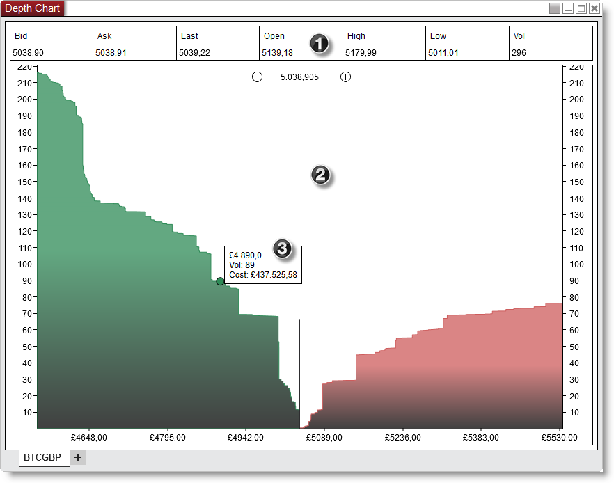
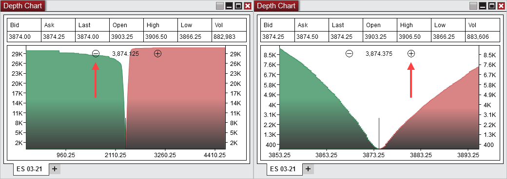
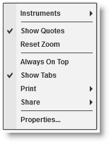

|
<< Click to Display Table of Contents >> Using the Depth Chart window |


|
Using the Depth Chart window
|
<< Click to Display Table of Contents >> Using the Depth Chart window |
|
 Selecting a Cryptocurreny Instrument
Selecting a Cryptocurreny Instrument
There are multiple ways to select an Instrument in the Depth Chart window.
•Right clicking on the Depth Chart window and selecting the menu Instruments. •With the Depth Chart window selected begin typing the instrument symbol directly on the keyboard. Typing will trigger the Overlay Instrument Selector.
For more Information on instrument selection and management please see Instruments section of the Help Guide. |
 Understanding the layout of the Depth Chart window
Understanding the layout of the Depth Chart window

|
Bid |
The current bid price |
Ask |
The current ask price |
Last |
The current last traded price |
Open |
The current sessions open price |
High |
The current sessions high price |
Low |
The current sessions low price |
Vol |
The current sessions total volume. |
You can disable the Quotes section by clicking on your right mouse button and deselecting the menu item Show Quotes.
The Graph displays the cumulative buy and sell orders through the full available book, so the vertical Y-axis value at any point is the result of summing all bids (asks) from the best bid (ask) to the price value on the horizontal X axis.

You can use the +/- zoom buttons on the chart to set the zoom level (right click on the chart > Reset zoom to reset the level to default).
The tooltip displays:
- the selected Depth chart x-axis value
- the associated cumulative volume up to that value
- the currency cost of the cumulative volume
Right mouse click on the Depth Chart window to access the right click menu.

Instruments |
Selects the instrument |
Show Quotes |
Sets if the quotes section is displayed |
Reset Zoom |
Resets the zoom level to default |
Always On Top |
Sets if the window should be always on top of other windows |
Show Tabs |
Sets if the window will allow for tab support |
Displays Print options |
|
Share |
Displays Share options |
Properties... |
Sets the Depth Chart Properties |
The Depth Chart window is a tabbed interface, this gives you the ability to have multiple Depth Chart tabs configured in the same window. Please see the Using Tabs section of the help guide for more information. |